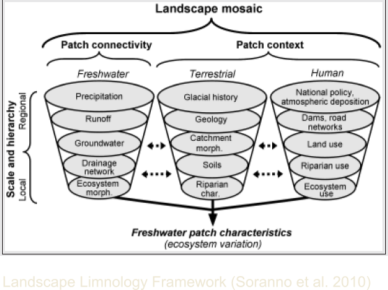
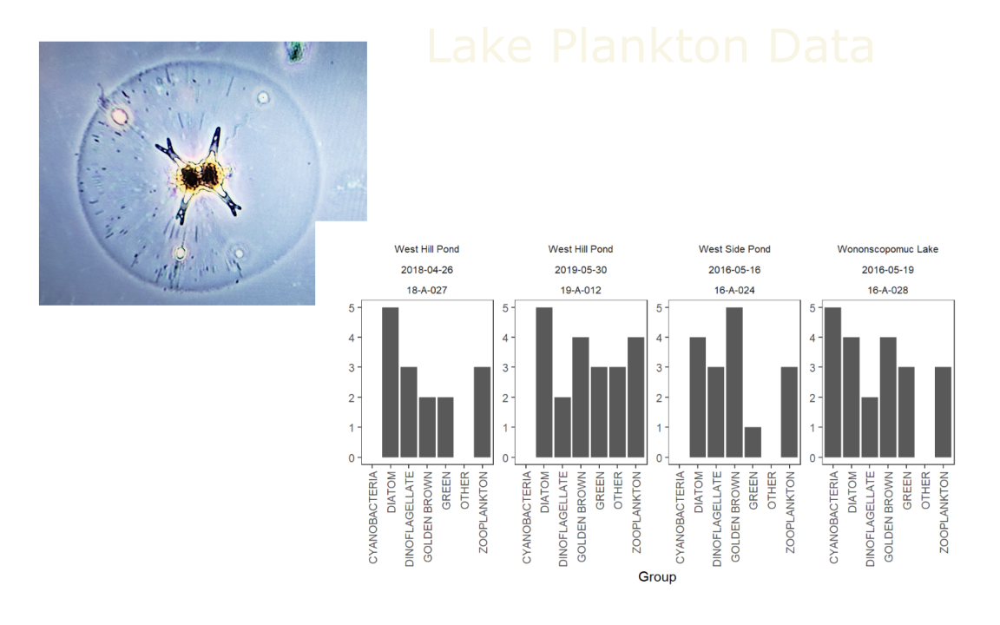

Developing a Science-Based Methodology to Assess Aquatic Life in Connecticut Lakes
ABM Lakes Team - Ansel Aarrestad, Mary Becker, Meg Lally, Tracy Lizotte & Walter Tokarz
Historical Assessment
Biological Assessments
Biological Assessments
Biological Assemblages
Driving Questions
Classify Lakes
Classify Lakes

Classify Lakes
Characterize Changes in Historical Land Cover (30 M)
Characterize Current Land Cover (1 M)

Characterize Current Land Cover (1 M)
Biological Assessment
